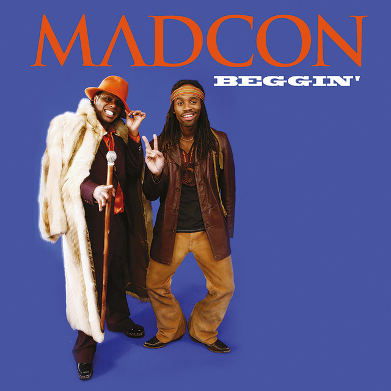

Beggin é uma música interpretada pelo grupo norueguês Madcon. A canção combina elementos de pop, hip-hop e R&B, destacando-se por sua melodia marcante e ritmo dançante.
A versão de Beggin interpretada pelo Madcon ganhou destaque internacional e se tornou uma das músicas mais conhecidas do grupo.
A canção apresenta uma melodia marcante e uma combinação de elementos musicais que contribuem para seu estilo característico.
Madcon é um grupo musical norueguês formado pelos artistas Tshawe Baqwa e Yosef Wolde-Mariam. O grupo ficou conhecido internacionalmente por sua combinação de elementos de hip-hop, pop e R&B.
Artista: Madcon
Música: Beggin
Gêneros: Pop, Hip-Hop e R&B